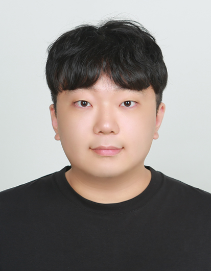

2026.09 — Present
ROBOTIS · RX Team
장기현장실습 / Industrial Automation
PLC 상태 수집과 MC Protocol 3E 통신 테스트, 상태 갱신 신뢰성 검토, Operator HMI 관련 업무 경험. 비공개 코드·내부 설비 자료는 공개하지 않습니다.
하드웨어와 소프트웨어, AI와 데이터가 만나는 지점에서 문제를 해결합니다.

한국항공대학교 항공전자정보공학부 전자및항공전자공학전공
2027년 2월 졸업 예정 · GPA 3.98 / 4.50
자율주행 경로계획과 컴퓨터비전부터 Raspberry Pi 기반 임베디드 AI, 실시간 항공 데이터 처리, PLC 통신 검토까지 다양한 프로젝트를 수행했습니다. 각각의 프로젝트에서 해결한 문제와 직접 담당한 역할을 구분해 소개합니다.
실험 수치는 해당 프로젝트의 측정 조건에서 얻은 결과입니다.
기업 현장, 연구실, 자율주행 팀에서 수행한 기술적 경험
장기현장실습 / Industrial Automation
PLC 상태 수집과 MC Protocol 3E 통신 테스트, 상태 갱신 신뢰성 검토, Operator HMI 관련 업무 경험. 비공개 코드·내부 설비 자료는 공개하지 않습니다.
nuScenes 기반 자율주행 장면에서 GroundingDINO·OWLv2 비교 및 자연어 의도·예상 경로에 따른 관련 객체 평가 연구
B.S. in Electronics & Avionics Engineering
GPA 3.98 / 4.50
ROS·MORAI 기반 경로계획, 장애물 회피, 제어 연동, Frenet·MPPI 비교 평가
프로젝트와 연구에서 사용한 기술 위주로 정리했습니다.
SQLite · FastAPI · WebSocket · NumPy · Git · 데이터 처리 및 실험 로깅
GroundingDINO · OWLv2 · InsightFace · MediaPipe · 영상처리 및 모델 평가
Ubuntu · MORAI · MPPI · LTV-MPC 연동 · MC Protocol · Verilog
대표 프로젝트의 문제 정의, 역할, 구현, 검증을 요약했습니다. 점선 영역은 실제 사진·영상·결과 그래프를 나중에 추가할 자리입니다.
Raspberry Pi 4B 기반 얼굴·시선·운동 인식 시스템. 모델과 데이터 통합 후 발생한 실행 문제를 Python 멀티스레딩으로 해결하고, 남아 있던 UI 지연은 4단계 Adaptive Resolution Pipeline(ARP)으로 개선했습니다.
검증: CPU 사용량 50.5% 절감 · 얼굴 인식 TPR 92.1%(12명, 416회) · 캡스톤 우수상
RTL-SDR로 1090MHz 항공 신호를 수신하고 Mode S DF17/CPR 해독, SQLite 저장, FastAPI·WebSocket 기반 실시간 전달, Leaflet.js 시각화를 연결한 팀 프로젝트입니다.
파이프라인: RF 수신 → 디코딩 → 위치 복원 → 저장 → 지도 표시
공개 개인 저장소 링크는 추후 추가
AI Mission Team Leader로 ROS·MORAI 기반 미션 수행, 장애물 회피 경로생성, LTV-MPC 제어 연동과 Frenet·MPPI 비교 실험을 수행했습니다.
비교: 평균 계산 8.74ms vs 206.76ms · 횡방향 RMS 0.174m vs 0.092m (Frenet vs MPPI)
팀 프로젝트 · 공개 가능한 내용만 게시
동일 장면에서 프롬프트 표현·임계값·도메인을 통제해 탐지 수와 신뢰도를 분석하고 forward hook으로 query-text 유사도 분포를 조사했습니다.
실험 범위: 한국 실환경 이미지 9장 중심의 사례 분석. 대규모 벤치마크 성능으로 일반화하지 않습니다.
Bayer demosaicing 및 JPEG-style DCT 손실 복원을 구현하고 PSNR/SSIM으로 결과를 평가했습니다. 실험 재현성 문제를 찾아 수정하는 과정도 문서화했습니다.
결과: VNG 43.25 vs Bilinear 38.22dB · DCT 계수 손실 복원 Hybrid 33.67 vs Zero 22.01dB
항공기 객실 수납함의 안전성을 높이기 위해 가속도 조건에서 작동하는 이중 잠금 장치를 제안한 팀 프로젝트입니다.
성과: Airbus 101 본선 5위
완성 결과뿐 아니라 어떤 문제가 있었고 어떤 검증을 했는지를 기록합니다.
기술 프로젝트와 학습의 결과를 간결하게 정리했습니다.
프로젝트 코드와 상세 문서는 개인 GitHub에서 확인할 수 있습니다.
사진 교체: 각 프로젝트 카드의 data-image-slot 요소를 이미지 태그로 교체하면 됩니다. 실제 사진이 준비되기 전에는 안내 영역을 유지합니다. ROBOTIS 등 조직 내부 코드·비공개 자료는 게시하지 않습니다.